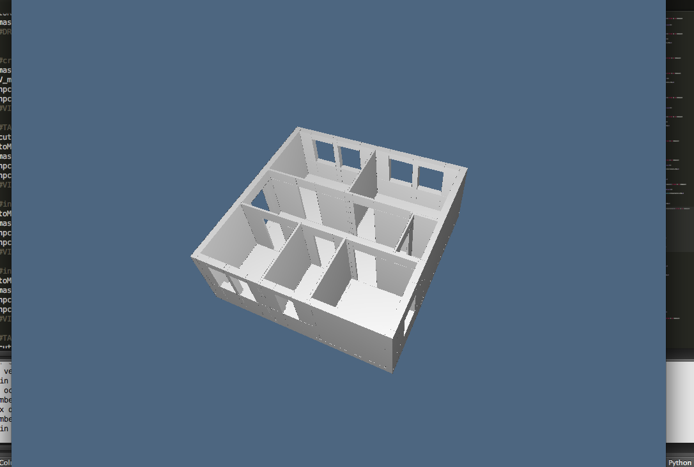
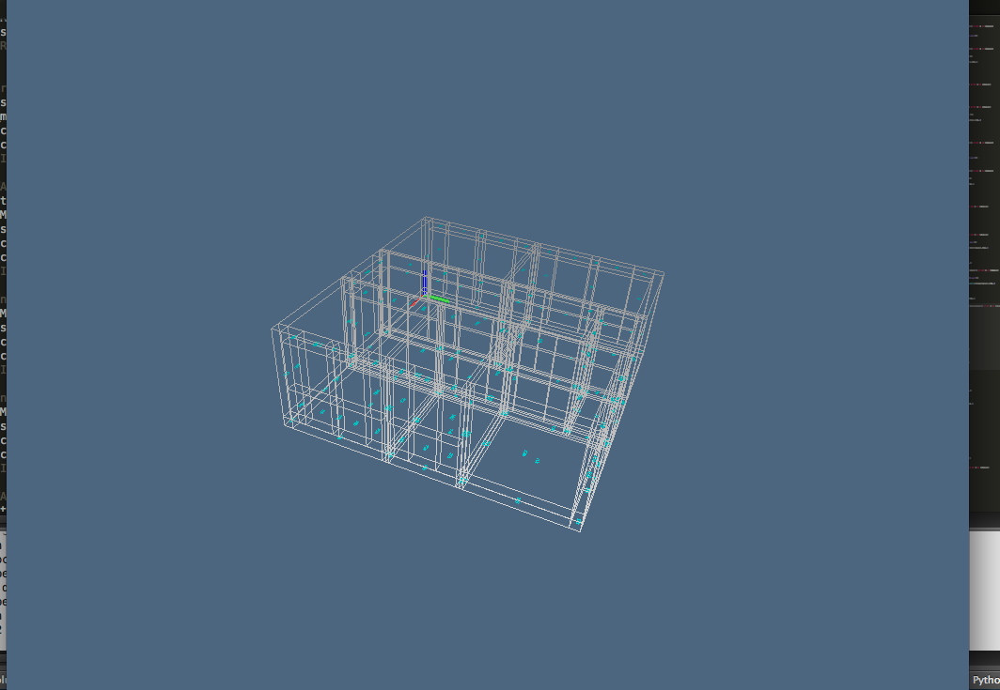
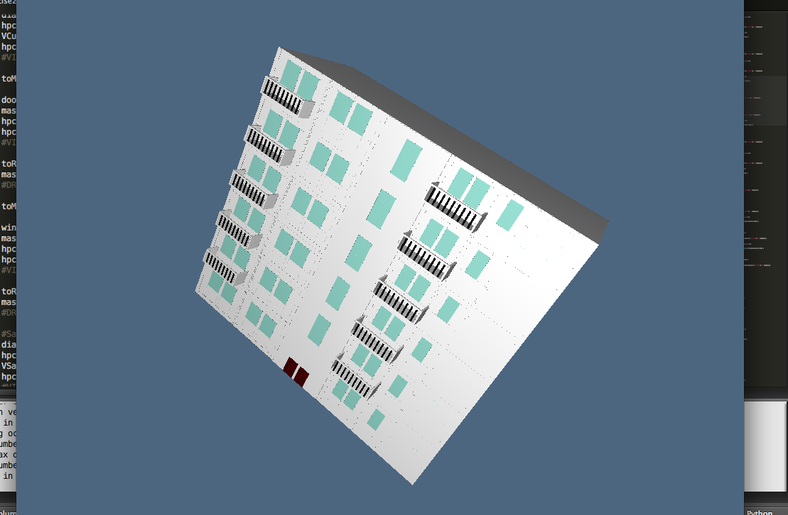

1. Nome dell'edificio: TIZIANO HOUSE
2. Nome e cognome: Tiziano Sperati
3. Matricola: 417136
Descrizione lavoro svolto:
Ho creato le stanze dell'appartamento comprensivi di porte e finestre. Ho unito tutte le stanza in un master (reticolato) disponendoli secondo la topologia dell'appartamento. Per il secondo esercizio sono partito dal mio appartamento e ho creato la struttura del palazzo.
Immagini:



Collegamenti:
exercise1.py
exercise2.py
exercise3.py